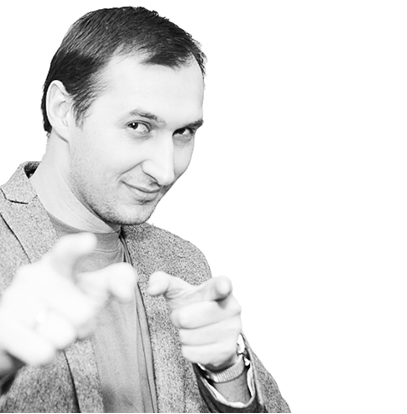
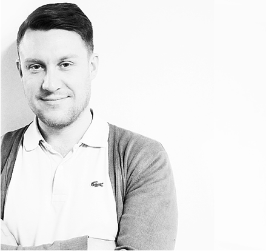
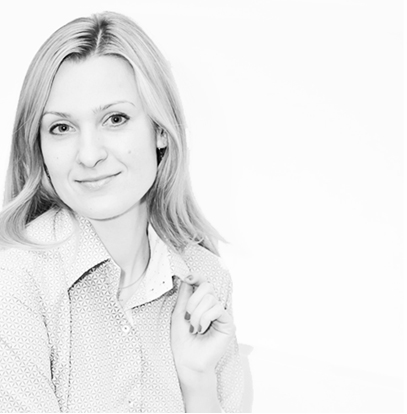

О КОМПАНИИ: КОМАНДА
Александр Бровкин
Главный архитектор
Окончил факультет архитектуры МГСУ в 2005 г. На сегодняшний день, возглавляет архитектурное направление в бюро «Т+Т Architects». После университета работал в архитектурной мастерской Гинзбург Архитектс. Помимо этого с 2007 года входит в состав архитектурной группы element.
Александр сторонник «чистых» архитектурных решений и выстраивает образ объекта, основываясь на логичных и функциональных принципах современной архитектуры. В новом строительстве отдает предпочтение легким геометрическим формам и материалам, при реконструкции объектов – важным считает рассказать «историю» здания (комплекса зданий), деликатно придав новое звучание окружающей застройке./ (комплекса зданий), деликатно придав новое звучание окружающей застройке.(комплекса зданий), деликатно придав
Воеводина Полина
Руководитель отдела разработки концепций
Окончила Московский Архитектурный институт в 2010 году, до этого 3 года училась в архитектурном колледже в Измайлово.
Рабочую практику начала в студенческие годы. После этого, почти 5 лет была архитектором в компании Mealhouse Concept Design.
С момента основания работает в архитектурной мастерской «Т+Т Architects» в качестве идеолога отдела разработки концепций как для для объектов архитектуры, так и для

была создана в начале 2012 года. Но команда,
которую я возглавляю, сложилась гораздо
раньше: несколько лет мы все работали в
составедругого бюро. Некоторые из проектов,
которые мы начали делать тогда, были
закончены уже под новым брендом и по праву
вошли в портфолио T+T Architects.
Чуканов Владимир
Главный архитектор
Тонко чувствует специфику и особенности коммерческих интерьеров. В компании T+T Architects руководит отделом разработки интерьеров. За время проектной деятельности разработал и принимал участие в проектировании офисов крупных международных и российских компаний. Последователен в управлении, щепетилен в контроле проектных решений.
Нефедова Наталья
Коммерческий директор
В компании с 2012 года. В рамках T+T Architects осуществляет взаимодействие с контрагентами и , отвечает за выстраивание эффективных партнерских отношений с участниками рынка, где представлены интересы бюро, СМИ. Одной из основных задач считает выстраивание оптимальных бизнес-процессов внутри компании.

{kind=link}
{kind=link}